The problem
Oysters filter sediment, algae, nitrogen and phosphorus out of the water around them. At the Chesapeake's current population, filtering the whole bay once takes over a year.
Restoration and bottom-culture farms make planting and harvesting decisions largely blind — where the hard surfaces are, where sediment would bury spat, which beds have matured. The target was a vehicle cheap enough for a small farm to own, carrying sensors that answer those questions directly.
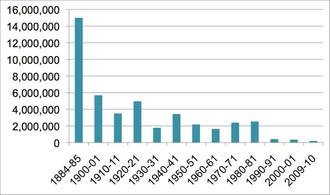
The vehicle
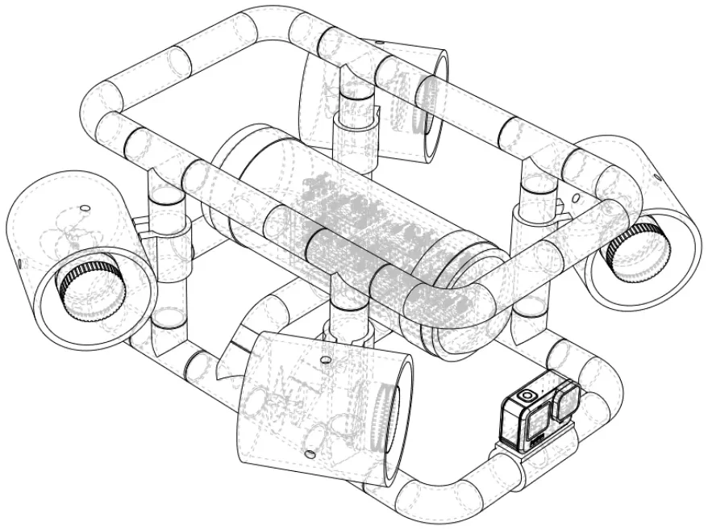
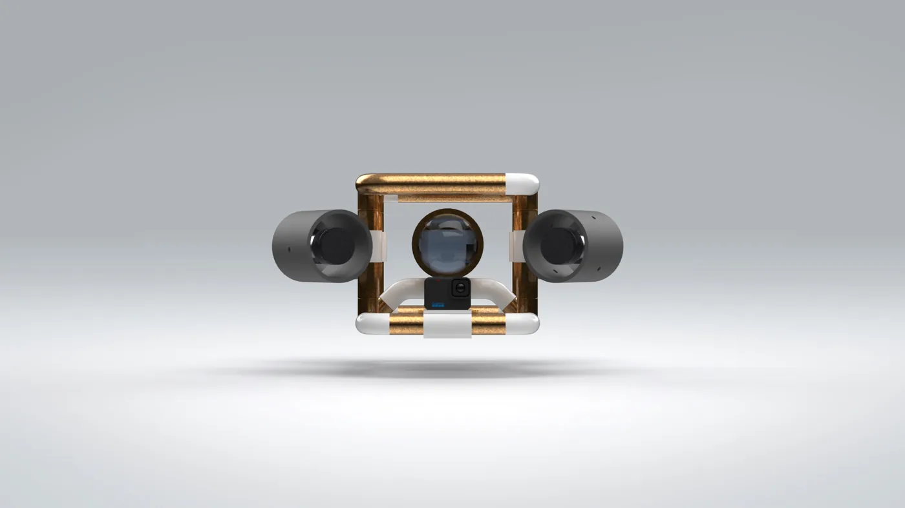
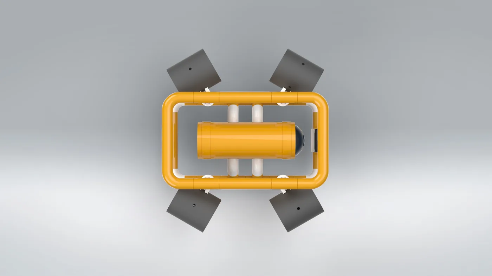
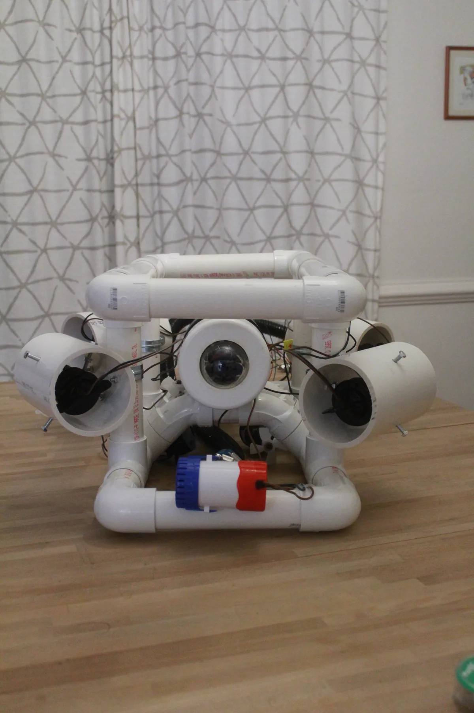
- Frame
- 1.5in Sch40 PVC · 12 tees, 10 elbows · flooding port for neutral buoyancy
- Hull
- 4in PVC tube, two end caps, rubber coupling for access · 2.5in acrylic dome · 4 tether penetrations
- Onboard
- Elegoo Mega
- Topside
- Arduino Uno reading a PlayStation 2 controller
- Thrusters
- 6 × 500 GPH bilge pump · BTS7960 drivers · guards cut from 4in offcut
- Tether
- Cat 6 in braided sleeve
- Camera
- GoPro Hero 7 Silver (donated)
PVC because it's cheap, already watertight, and the voids double as buoyancy. The rubber coupling was the one concession to serviceability — without it the electronics stack gets epoxied shut permanently.
Telemetry and motor control
Radio is useless through water, so the vehicle is tethered — which trades a wireless problem for a signal-integrity one. Arduino logic swings 0–5 V; down a long conductor, resistance drops it and stray fields add noise on top. Decoded against a 2.5 V threshold, it doesn't survive the trip.
RS-485 doesn't measure against ground. It sends each bit twice, inverted, down a twisted pair, and the receiver reads only the difference. Noise couples into both wires roughly equally and cancels in the subtraction. A transceiver module at each end converts to and from the Arduino's UART.
The same tether carries motor commands down. Six bilge pumps act as thrusters, each behind a BTS7960 driver. Speed is pulse width modulation — the driver chops the 12 V supply fast enough that the motor responds to the average. Duty is a byte, 0–255; that plus a direction bit is the whole motor command.
PS2 controller, pressure and temperature all stable at 9600 baud — about 40 values per second, no interference.
Sensors and water sampling
Temperature and pressure both need to touch the water, so both need a hull penetration. They sit in their own 4in PVC compartment rather than the one holding the microcontroller — if it floods, it floods alone.
Sampling at depth is normally a Nansen or Niskin bottle, inverted and sealed by a released weight. Building that Arduino-driven and watertight wasn't realistic on the budget, so the sampler reuses what was already aboard: a bilge pump plumbed to a sealed 4in container with a check valve in the line, fired from a spare controller button. Container ≈ 0.22 gal, pump 1100 GPH, so 0.72 s to fill.
The relay driving that pump was rated 4.5–12 V and the Mega tops out at 5 V, inside the range. At 5 V it lit its own indicator LED and the coil never pulled in — the rating was voltage, the binding constraint was current. A 2N2222 between the 12 V battery and the relay let the Mega switch the real supply.
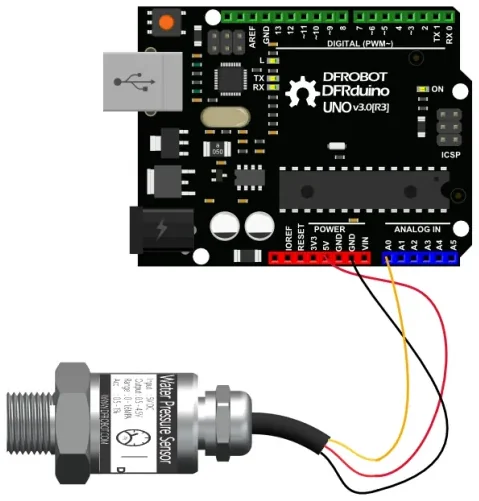
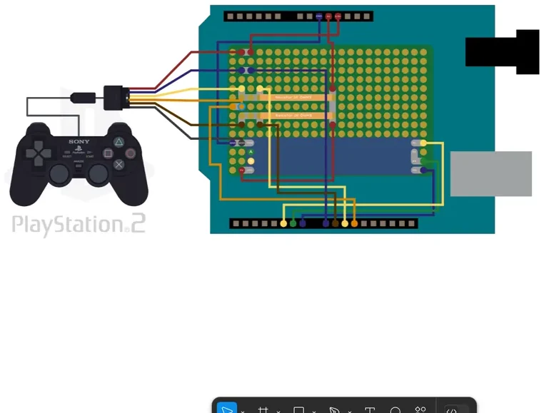
Waterproofing
Every conductor entering the hull is a leak path. A short length of ⅛in PVC forms a well around the wires, filled with epoxy that cures into a plug.
Insulation is stripped where the wires cross the epoxy. Pot a bundle with the jacket intact and a nick anywhere along the tether lets water wick inside the insulation, through the plug, into the compartment — a perfect-looking seal and a flooded hull. Bare conductor bonds to the epoxy with no channel to follow.
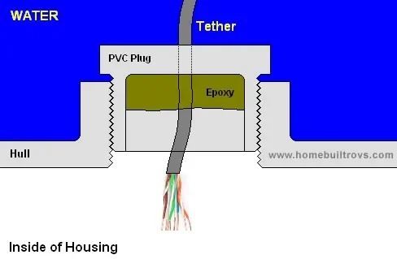
Results
Subsystems were wet-tested individually. The assembled vehicle never made a piloted dive, so there are no handling, endurance or survey numbers here.
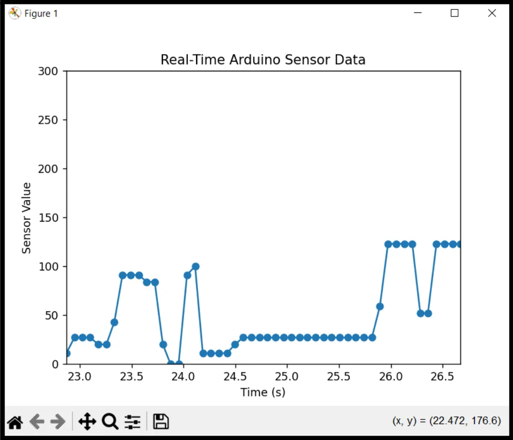
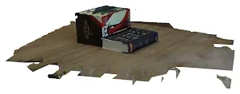
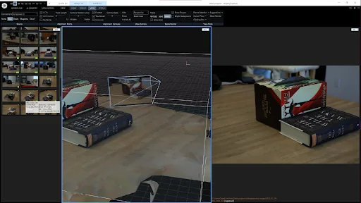
RealityCapture reconstructed a stack of books in enough detail to read the covers. Underwater it solved nothing: suspended sediment collapses contrast, and the GoPro's very wide angle spreads what detail survives across too few pixels, leaving too few common points between frames. Likely workable in clearer freshwater; not in the Chesapeake with this camera.